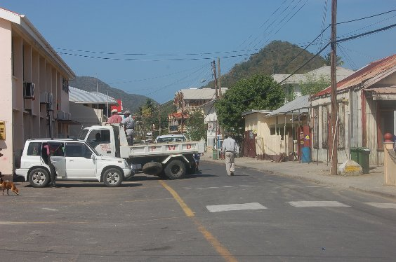

Abdunkeln mit dem Ebenenmodus „Überlagern“
Falls die Überbelichtung nur geringfügig ist, kann mit dem Ebenenmodus Überlagern die Helligkeit angepasst werden.|  |
| Abb.
1: Das überbelichtete Original |
Zunächst wird über die Ebenen-Verwaltung (Strg + L) ein Duplikat der Ebene erzeugt. Dazu befindet sich eine Schaltfläche im unteren Teil des Werkzeugs. Der Modus der oberen Ebene wird anschließend auf Überlagern gesetzt.
 |
| Abb.
2: Das Ebenen-Werkzeug |
Das Bild nach Bearbeitung. Es enthält kontrastreichere Farben.
 |
| Abb.
3: Das abgedunkelte Bild |
© 2009-2017 Michael Roppel